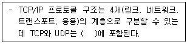
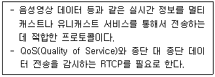
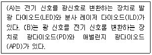
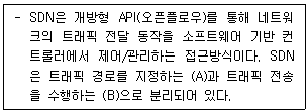
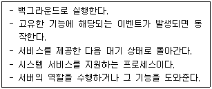
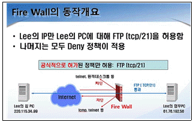
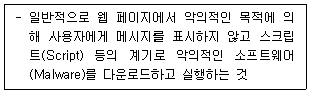
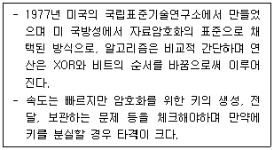
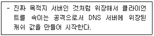
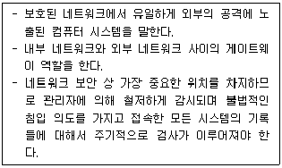

네트워크관리사-1급 (2020-05-24 기출문제)
1과목: TCP/IP
1. TCP/IP 계층 중 다른 계층에서 동작하는 프로토콜은?
- IP
- ICMP
- UDP
- IGMP
(정답률: 67%)

2. Internet Layer를 구성하는 프로토콜들의 헤더에 대한 설명으로 옳지 않은 것은?
- IP 헤더의 TTL 필드는 Looping에 의해 패킷이 영구히 떠도는 것을 방지하기 위한 필드이다.
- IP 헤더의 프로토콜 필드는 상위 계층의 프로토콜을 식별하기 위해 사용되는 필드이다.
- ICMP Echo Request 패킷의 Type, Code는 각각 '0', '0' 이다.
- ARP Request 패킷의 목적지 MAC Address는 브로드 캐스트인 'FF-FF-FF-FF-FF-FF' 이다.
(정답률: 54%)
3. 브로드캐스트(Broadcast)에 대한 설명 중 올바른 것은?
- 어떤 특정 네트워크에 속한 모든 노드에 대하여 데이터 수신을 지시할 때 사용한다.
- 단일 호스트에 할당이 가능하다.
- 서브네트워크로 분할할 때 이용된다.
- 호스트의 Bit가 전부 '0'일 경우이다.
(정답률: 68%)
4. 네트워크 ID ′210.182.73.0′을 6개의 서브넷으로 나누고, 각 서브넷 마다 적어도 30개 이상의 Host ID를 필요로 한다. 적절한 서브넷 마스크 값은?
- 255.255.255.224
- 255.255.255.192
- 255.255.255.128
- 255.255.255.0
(정답률: 62%)
5. IP 패킷의 구조에서 헤더 부분에 들어가는 항목으로 옳지 않은 것은?
- Version
- Total Length
- TTL(Time to Live)
- Data
(정답률: 60%)
6. 서브넷 마스크(Subnet Mask)에 대한 설명 중 올바른 것은?
- IP Address에서 Network Address와 Host Address를 구분하는 기능을 수행한다.
- 하나의 Network를 두 개 이상의 Network로 나눌 수 없다.
- IP Address는 효율적으로 관리하나 트래픽 관리 및 제어가 어렵다.
- 불필요한 브로드캐스트 메시지를 제한할 수 없다.
(정답률: 66%)
7. 라우터는 자신을 네트워크의 중심점으로 간주하여 최단 경로의 트리를 구성하는 방식으로, 사용자에 의한 경로의 지정, 가장 경제적인 경로의 지정, 복수경로 선정 등의 기능을 제공하는 라우팅 프로토콜은?
- OSPF(Open Shortest Path First)
- IGRP(Interior Gateway Routing Protocol)
- RIP(Routing Information Protocol)
- BGP(Border Gateway Protocol)
(정답률: 53%)
8. 네트워크 및 서버 관리자 Kim 사원은 장기간 출장명령을 받은 관계로 회사 내부에 있는 업무용 PC에 원격데스크톱(Terminal service)을 설정하려고 한다. 하지만 업무용 PC가 공인IP가 아니라 IP공유기 내부에 있는 사설IP로 사용 중이다. 외부에서 이 업무용 PC에 원격데스크톱(Terminal service)을 사용하기 위한 설정에 있어 옳은 것은?[단. IP 공유기에 할당 공인 IP는 210.104.177.55, 업무용 PC에 할당된 사설 IP(공유기 내부)는 192.168.0.22, 업무용 PC는 원격설정이 되어 있음 (TCP/3389)]
- 방화벽에서 192.168.0.22번으로 tcp/3389번에 대한 접속을 허용한다
- IP 공유기내부에 210.104.177.55번에 포트포워딩을 설정한다.
- 업무용 PC에 반드시 Windows login password를 설정한다.
- 업무용 PC에 반드시 CMOS password를 설정한다.
(정답률: 30%)
9. ICMP의 메세지 유형으로 옳지 않은 것은?
- Destination Unreachable
- Time Exceeded
- Echo Reply
- Echo Research
(정답률: 47%)
10. SNMP에 대한 설명 중 올바른 것은?
- TCP/IP 프로토콜의 IP에서 접속 없이 데이터의 전송을 수행하는 기능을 규정한다.
- 시작지 호스트에서 여러 목적지 호스트로 데이터를 전송할 때 사용된다.
- IP에서의 오류(Error)제어를 위하여 사용되며, 시작지 호스트의 라우팅 실패를 보고한다.
- 네트워크의 장비로부터 데이터를 수집하여 네트워크의 관리를 지원하고 성능을 향상시킨다.
(정답률: 57%)
11. IGMP에 대한 설명 중 올바른 것은?
- 시작지 호스트에서 여러 목적지 호스트로 데이터를 전송할 때 사용된다.
- TCP/IP 프로토콜의 IP에서 접속없이 데이터의 전송을 수행하는 기능을 규정한다.
- 네트워크의 구성원에 패킷을 보내기 위한 하드웨어 주소를 정한다.
- IP에서의 오류(Error) 제어를 위하여 사용되며, 시작지 호스트의 라우팅 실패를 보고한다.
(정답률: 52%)
12. ARP 브로드캐스트를 이용해서 다른 장비에게 네트워크에 있는 자신의 존재를 알리는 목적으로만 사용되는 ARP 변형 프로토콜로, 같은 IP Address의 중복 사용을 방지하는 것은?
- Reverse ARP
- Inverse ARP
- DHCP ARP
- Gratuitous ARP
(정답률: 31%)
13. IPv6를 IPv4와 비교할 때 기대효과라 할 수 없는 것은?
- IPv4에 비해 더 많은 호스트를 사용할 수 있다.
- 옵션을 이용하여 효율적이고 다양한 서비스가 가능하며 보안 기능이 추가되었다.
- 라우터의 부담을 줄이고 네트워크 부하를 분산시킬 수 있다.
- 더 넓은 지역으로의 브로드 캐스트가 가능하다.
(정답률: 53%)
14. 아래 설명하는 내용 중 ( ) 안에 적합한 것은?

- 링크 계층
- 네트워크 계층
- 트랜스포트 계층
- 응용 계층
(정답률: 58%)
15. TCP의 프로토콜 이름과 일반 사용(Well-Known) 포트 연결로 옳지 않은 것은?
- SMTP : 25
- HTTP : 80
- POP3 : 100
- FTP-Data : 20
(정답률: 64%)
16. RIP에 대한 설명으로 옳지 않은 것은?
- 독립적인 네트워크 내에서 라우팅 정보 관리를 위해 광범위하게 사용된 프로토콜이다.
- 자신이 속해 있는 네트워크에 매 30초마다 라우팅 정보를 브로드캐스팅(Broadcasting) 한다.
- 네트워크 거리를 결정하는 방법으로 홉의 총계를 사용한다.
- 대규모 네트워크에서 최적의 해결방안이다.
(정답률: 60%)
2과목: 네트워크 일반
17. IP Address 중 Class가 다른 주소는?
- 191.235.47.35
- 128.128.1⑤.4
- 169.146.58.5
- 195.204.26.34
(정답률: 66%)
18. 다음 설명에 알맞은 프로토콜은?

- TCP(Transmission Control Protocol)
- SIP(Session Initiation Protocol)
- RSVP(ReSouece reserVation Protocol)
- RTP(Real-time Transfer Protocol)
(정답률: 54%)
19. 광통신 시스템의 구성 요소에 대한 다음 설명의 (A)와 (B)에 들어갈 알맞은 용어는 무엇인가?

- (A) 광증폭기, (B) 광다중화
- (A) 광다중화, (B) 광증폭기
- (A) 발광 소자, (B) 수광 소자
- (A) 수광 소자, (B) 발광 소자
(정답률: 60%)
20. ARQ 중 에러가 발생한 블록 이후의 모든 블록을 재전송하는 방식은?
- Go-Back-N ARQ
- Stop-and-Wait ARQ
- Selective ARQ
- Adaptive ARQ
(정답률: 61%)
21. 에러 검출(Error Detection)과 에러 정정(Error Correction)기능을 모두 포함하는 기법으로 옳지 않은 것은?
- 검사합(Checksum)
- 단일 비트 에러 정정(Single Bit Error Correction)
- 해밍코드(Hamming Code)
- 상승코드(Convolutional Code)
(정답률: 40%)
22. 흐름제어, 오류제어, 접근제어, 주소 지정을 담당하는 계층은?
- 네트워크 계층
- 데이터링크 계층
- 물리 계층
- 전송 계층
(정답률: 50%)
23. 다음은 SDN(Software Defined Network)에 대한 설명이다. (A)와 (B)에 들어갈 용어는 무엇인가?

- (A) 제어 기능, (B) 데이터 기능
- (A) 데이터 기능, (B) 제어 기능
- (A) 라우팅 기능, (B) 포워딩 기능
- (A) 포워딩 기능, (B) 라우팅 기능
(정답률: 34%)
24. 코드 분할 다중화에 관한 설명 중 옳지 않은 것은?
- 스펙트럼 확산 방식을 사용한다.
- 동일한 주파수 대역을 사용할 수 있다.
- 주파수 이용 효율이 높다.
- 서로 같은 코드를 사용하여 통신하기 때문에 통신보안이 우수하다.
(정답률: 56%)
25. 네트워크 액세스 방법에 속하지 않는 것은?
- CSMA/CA
- CSMA/CD
- POSIX
- Token Pass
(정답률: 57%)
26. 패킷교환방식으로 옳지 않은 것은?
- 패킷은 가변 길이를 갖는다.
- 패킷은 절대로 손실될 수 없다.
- 패킷은 단편화될 수 있다.
- 패킷은 중복될 수 있다.
(정답률: 60%)
27. OSI 7 Layer 중에서 응용프로그램이 네트워크 자원을 사용할 수 있는 통로를 제공 해주는 역할을 담당하는 Layer는?
- Application Layer
- Session Layer
- Transport Layer
- Presentation Layer
(정답률: 43%)
3과목: NOS
28. Windows Server 2008 R2에서 ′www.icqa.or.kr′의 IP Address를 얻기 위한 콘솔 명령어는?
- ipconfig www.icqa.or.kr
- netstat www.icqa.or.kr
- find www.icqa.or.kr
- nslookup www.icqa.or.kr
(정답률: 46%)
29. Linux에서 마운트에 대한 설명으로 올바른 것은?
- Linux에서 CD-ROM은 마운트 하지 않고 바로 사용할 수 있다.
- USB는 '#mount -t iso9660 /dev/fd0/ mnt/usb'와 같은 방법으로 마운트 시킨다.
- 마운트를 해제하는 명령어는 'unmount'이다.
- 해당파일 시스템이 사용 중이면 'mount'가 해제되지 않는다.
(정답률: 43%)
30. Linux의 퍼미션(Permission)에 대한 설명 중 옳지 않은 것은?
- 파일의 그룹 소유권을 변경하기 위한 명령은 'chgrp'이다.
- 파일의 접근모드를 변경하기 위한 명령은 'chmod'이다.
- 모든 사용자에게 모든 권한을 부여하려면 권한을 '666'으로 변경한다.
- 파일의 소유권을 변경하기 위한 명령은 'chown'이다.
(정답률: 56%)
31. Linux에서 주어진 명령어의 매뉴얼(도움말, 옵션 등)을 출력하기 위해 사용되는 명령어는?
- ps
- fine
- man
- ls
(정답률: 46%)
32. ′httpd.conf′ 파일을 사용하여 Apache 웹 서버를 설정하려고 한다. 주요 설정 항목에 대한 설명으로 옳지 않은 것은?
- ServerRoot : 아파치 웹서버의 각종 설정 파일이 있는 디렉터리를 지정한다.
- Listen : 아파치 웹서버가 사용할 기본 포트(80번)를 설정한다.
- DocumentRoot : 웹사이트에 사용될 각종 파일들이 위치한 디렉터리를 지정한다.
- ServerType : 서버의 실행 방법을 지정하며, Single Mode와 Multi Mode가 있다.
(정답률: 38%)
33. Windows Server 2008 R2에서 DHCP로부터 받은 IP Address와 TCP/IP의 모든 설정을 해제시키는 명령어와 옵션은?
- ipconfig /release
- ipconfig /all
- ipconfig /flushdns
- ipconfig /renew
(정답률: 50%)
34. Linux의 ′vi′ 에디터 명령 모드 작업에 대한 설명 중 올바른 것은?
- 저장하는 방법은 ′:q′ 이다.
- 저장하지 않고 끝내는 방법은 ′:wq!′ 이다.
- 문서에 행 번호 붙이기는 ′:set nu′ 이다.
- 한 줄 삭제 명령은 ′dw′ 이다.
(정답률: 44%)
35. Linux 파티션에 담긴 자료를 윈도우 기반 컴퓨터가 공유하거나, 윈도우 파티션에 담긴 자료를 Linux 기반 컴퓨터가 공유할 수 있도록 제공하는 서비스로 올바른 것은?
- SAMBA
- BIND
- IRC
- MySQL
(정답률: 60%)
36. Windows Server 2008 R2의 ′netstat′ 명령어로 알 수 없는 정보는?
- TCP 접속 프로토콜 정보
- ICMP 송수신 통계
- UDP 대기용 Open 포트 상태
- 접속자 MAC 주소
(정답률: 53%)
37. DNS가 URL ′icqa.or.kr′을 IP Address ′211.111.144.240′으로 서비스하고 있을 때 DNS 설정 항목을 수정하여 ′test.icqa.or.kr′로 외부에 서비스할 수 있는 가장 적절한 방법은?
- DNS MX 레코드를 추가한다.
- DNS A 레코드를 추가한다.
- DNS REVERSE 영역을 추가한다.
- 서비스 할 수 없다.
(정답률: 57%)
38. Linux 시스템을 웹 서버로 운영하려고 한다. 이때 웹 서버로 운영하기 위해 반드시 설치해야 할 것은?
- BIND
- Apache
- MySQL
- Samba
(정답률: 58%)
39. Bind 설정 파일 중 존(Zone) 파일은 여러 개의 레코드로 구분되어 설정된다. 각 레코드에 대한 설명으로 옳지 않은 것은?
- $TTL, SOA, NS, MX, A, CNAME 레코드 등으로 구분된다.
- SOA 레코드는 Start of Authority의 약자로 존 파일의 전체적인 설정이 시작됨을 나타낸다.
- $TTL은 특정 네임 서버가 질의하여 가져간 정보를 보관하고 있을 시간을 지정한다.
- MX 레코드는 호스트 이름에 대한 IP Address를 설정하기 위해 사용된다.
(정답률: 35%)
40. SOA 레코드에서 2차 네임서버가 1차 네임서버에 접속하여 Zone의 변경 여부를 검사할 주기에 해당되는 세부 설정항목은?
- Serial
- Refresh
- Retry
- Expire
(정답률: 36%)
41. Linux 명령어에 대한 설명 중 옳지 않은 것은?
- ls : cd와 비슷한 명령어로 디렉터리를 변경할 때 사용한다.
- cp : 파일을 다른 이름으로 또는 다른 디렉터리로 복사할 때 사용한다.
- mv : 파일을 다른 파일로 변경 또는 다른 디렉터리로 옮길 때 사용한다.
- rm : 파일을 삭제할 때 사용한다.
(정답률: 61%)
42. Linux에서 kill 명령어를 사용하여 해당 프로세스를 중단되도록 하려고 하는데, 중단하고자 하는 프로세스의 번호(PID)를 모를 경우 사용하는 명령어는?
- ps
- man
- help
- ls
(정답률: 54%)
43. Linux 시스템에서 '-rwxr-xr-x'와 같은 퍼미션을 나타내는 숫자는?
- 755
- 777
- 766
- 764
(정답률: 52%)
44. 다음 설명에 해당하는 프로세스는?

- shell
- kernel
- program
- deamon
(정답률: 52%)
45. Linux에서 사용되는 어플리케이션 및 환경 설정에 필요한 설정 파일들과 ′passwd′ 파일을 포함하고 있는 디렉터리는?
- /bin
- /home
- /etc
- /root
(정답률: 44%)
4과목: 네트워크 운용기기
46. 라우터가 라우팅 프로토콜을 이용해서 검색한 경로 정보를 저장하는 곳은?
- MAC Address 테이블
- NVRAM
- 플래쉬(Flash) 메모리
- 라우팅 테이블
(정답률: 54%)
47. 네트워크를 관리하는 Kim은 본사 네트워크의 보안 강화를 위하여 Fire Wall을 도입하게 되었다. 총무과 Lee의 요청으로 Lee의 집에서 FTP 서비스를 Lee의 본사 PC로 접속을 허용해달라는 요청을 받게 되었다. 다음 중 Kim이 Lee의 요청에 따라 FTP 서비스를 Fire Wall 정책에 입력시 필요한 사항이 아닌 것은?

- Lee의 집 공인IP : 220.115.34.99
- Lee의 본사 공인IP : 61.76.192.56
- 서비스 open 포트: tcp/21
- Lee 집 PC의 mac address: D8-50-E6-3C-AE-CB
(정답률: 53%)
48. Access-List 110을 Interface Ethernet 0 으로 들어오는 트래픽에 적용시키고자 할 때 사용하는 명령어는?
- Router(config)#ip access-group 110
- Router(config)# ip access-group 110 in
- Router(config-if)#ip access-group 110
- Router(config-if)# ip access-group 110 in
(정답률: 44%)
49. RAID의 기능 중에서 Hot Swap의 기능을 올바르게 설명한 것은?
- 전원이 꺼진 상태에서 디스크를 백업하는 기능이다.
- 전원이 꺼진 상태에서 디스크를 교체하는 기능이다.
- 전원이 켜진 상태에서 데이터를 여분의 디스크에 백업하는 기능이다.
- 전원이 켜진 상태에서 디스크를 교체하는 기능이다.
(정답률: 47%)
50. 리피터(Repeater)에 대한 설명으로 올바른 것은?
- 콜리젼 도메인(Collision Domain)을 나누어 주는 역할을 한다.
- 필터링과 포워딩 기능을 수행한다.
- 전송거리 연장을 위한 장비이다.
- 브로드캐스트 도메인(Broadcast Domain)을 나누어 주는 역할을 한다.
(정답률: 58%)
5과목: 정보보호개론
51. 네트워크를 관리하는 Kim은 사내에서 총무과 직원 Lee, 시설과 직원 Park 등 여러 직원들로부터 랜섬웨어(Ransomware)에 감염되었다는 소식을 들었다. 각종 보안장비 등의 Log를 분석한 결과 여러가지 경로를 통해서 랜섬웨어에 감염되었다는 것을 알게 되었다. 다음 중에서 Kim이 파악한 랜섬웨어에 감염되는 경로가 아닌 것은?
- 인증되지 않는 사이트나 P2P, 파일 공유사이트 이용
- 브라우져 자체의 취약점 및 플러그인의 취약점을 통한 감염 (Active X 콘트롤 및 플래시 플레이어의 업데이트 미실시)
- ISP에서 설치한 WiFi 사용
- 출처가 불분명한 e-메일의 첨부파일을 열어본 경우
(정답률: 65%)
52. 네트워크를 관리하는 Kim은 사내에서 정보 보안교육 매뉴얼을 제작하고 있다. 그 중에서 Password에 대한 부분을 제작 중인데 다음 중 Kim이 매뉴얼에 넣지 말아야 할 항목은?
- 영문자(대·소문자),숫자, 특수문자를 혼합한다.
- 패스위드의 길이를 증가시키기 위해서 알파벳 문자 앞뒤가 아닌 중간에 특수문자나 숫자를 삽입한다.
- 특정위치의 문자를 대문자로 변경하거나 모음만 대문자로 변경한다.
- ID와 중복되도록 설정하되 숫자는 전화번호나 차량번호 등을 이용한다.
(정답률: 64%)
53. 다음에서 설명하는 기술은?

- CERT
- 침해사고 대응
- 디지털 포렌식
- 드라이브 다운 로드
(정답률: 52%)
54. 서로 다른 메시지가 같은 해쉬값이 되지 않도록 하는 해쉬 함수의 성질은?
- 충돌 저항성
- 비트 길이
- 키 길이
- 엔트로피(entropy)
(정답률: 52%)
55. 침해사고 유형에 대한 설명으로 옳지 않은 것은?
- botnet : 스팸메일이나 악성코드 등을 전파하도록 하고 해커가 마음대로 제어할 수 있는 좀비 PC들로 구성된 네트워크를 말한다.
- Trojan : 정상기능의 프로그램으로 가장하여 프로그램 내에 숨어있는 코드로 의도하지 않은 기능을 수행하는 프로그램 또는 실행코드
- 이메일 스캠 : 불특정 다수에게 메일을 발송해 위장된 홈페이지로 접속하도록 한 뒤 이용자들의 금융정보 등을 빼내는 신종사기 수법
- APT : 지능적 지속 위협 공격으로 지능적이고 지속적으로 위협을 가해 피해를 주는 공격을 의미한다.
(정답률: 37%)
56. MITM 공격의 종류가 아닌 것은?
- ARP Spoofing
- DDos
- DNS Spoofing
- Sniffing
(정답률: 44%)
57. Session Hijacking이라는 웹 해킹 기법과 비슷하나, 사용자의 권한을 탈취 하는 공격 아니라 사용자가 확인한 패킷의 내용만을 훔쳐보는 기법은?
- Spoofing
- Side jacking
- Sniffing
- Strip attack
(정답률: 35%)
58. 다음에서 설명하는 암호화 기술은?

- RSA
- 디지털 서명
- IDEA
- DES
(정답률: 49%)
59. 다음은 TCP/IP 공격 유형에 대한 설명이다. 올바른 것은?

- DNS 캐쉬 포이즌(DNS Cache Poisoning)
- Denial of Service
- Data Insertion
- Man in the middle
(정답률: 54%)
60. 아래 내용은 방화벽의 구성 요소 중 무엇에 대한 설명인가?

- Application Level Firewall
- Dual-home Gateway
- Secure Gateway
- Bastion Host
(정답률: 37%)